Crypto and money, made practical
سواد مالی و کریپتو، کاربردیHow blockchains work, how to check a token before you touch it, and how to protect yourself from scams.
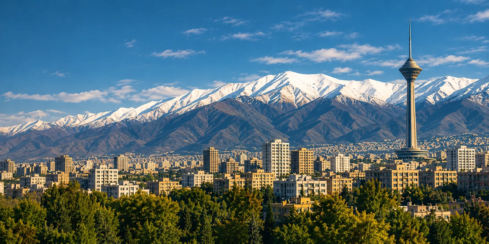
تصویرسازیبا هم، از بازار و کریپتو تا نوآوری و دستاوردهای ایرانیان را دنبال میکنیم.
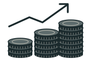
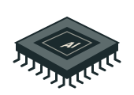


A fund targeting up to €50 billion for AI, quantum and chips, plus a Quantum Act. How it compares, who gains and where in Europe it works best.
صندوق STEF و قانون کوانتوم: مقایسه با برنامههای قبلی، ذینفعان و مناطقی که بیشتر میبرند.
Read the story
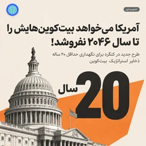
A bill to lock about 306,800 government-held BTC for 20 years reaches the House floor. It buys nothing, and time is short.
طرح قفل ۲۰ سالهی حدود ۳۰۶ هزار بیتکوین دولت آمریکا به صحن رسید؛ خریدی در آن نیست و وقت کم است.
Read the story

Babak Zanjani’s coin starts trading on 30 November. Sanctions, no domestic licence and thin liquidity: is it feasible, credible and tradeable?
معاملات از ۹ آذر؛ تحریم، نبود مجوز و نقدینگی کم. شدنی است، اعتبار دارد و کجا معامله میشود؟
Read the story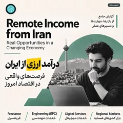

Digital services are 56% of world services exports. Which fields pay, where to find clients, how money can actually be received, and how real it all is.
بازار، ۱۶ حوزه، مشترییابی، اینترنت، تحریمها و راههای دریافت پول؛ و اینکه چقدر واقعی است.
Read the story

No wave of AI layoffs so far, but tasks and the way in for newcomers are changing. What this year’s evidence says and how to read the change.
اخراج گستردهای نیست، ولی وظیفهها و راه ورود تازهکارها عوض میشود. شواهد امسال و راه درست فهمیدن تغییر.
Read the story

“Treasury hacked” went viral. FinCEN says unauthorized access reached a limited subset of its systems. What is confirmed, what is not, and how to read such headlines.
«خزانهداری هک شد» وایرال شد. FinCEN از دسترسی غیرمجاز به بخش محدودی از سامانههایش میگوید. چه چیزی تأیید شده و چه چیزی نه؟
Read the story

Bitcoin is back under $60,000, ETFs are losing money and fear is at 11. Three scenarios for the week ahead and the one report that matters.
بیتکوین دوباره زیر ۶۰ هزار دلار است، ETFها پول از دست میدهند و ترس روی ۱۱ است. سه سناریو برای هفتهی آینده.
Read the story

Weight-loss drugs are moving money from snacks and pizza to protein, clothes and health. How big is the damage, where are the new markets, and where does Iran stand?
داروهای لاغری پول را از چیپس و پیتزا به پروتئین، پوشاک و سلامت میبرند. آسیب چقدر است، بازار تازه کجاست و ایران کجا ایستاده؟
Read the story

Circle and Paribu sign an MOU: how the digital dollar works, Türkiye’s lesson from 85% inflation, where Iran stands and the jobs ahead.
تفاهمنامهی Circle و Paribu: سازوکار دلار دیجیتال، درس ترکیه از تورم ۸۵ درصدی، جایگاه ایران و فرصتهای شغلی.
Read the story

Arak University’s magnesium and graphene oxide bone scaffold: lab results, how Germany and Korea got to market, Iran’s 5th place in the field, and the road to the operating room.
داربست منیزیم و گرافن اکسید دانشگاه اراک: نتایج آزمایشگاهی، تجربهی آلمان و کره، رتبهی پنجم ایران و راه تا اتاق عمل.
Read the story

A very strong El Niño on top of long-term warming could make 2027 a record year. What it means for food prices, electricity, water and Iran.
النینوی بسیار قوی روی گرمایش بلندمدت ممکن است ۲۰۲۷ را سال رکورد کند. اثرش بر قیمت غذا، برق، آب و ایران.
Read the story

Russia, Saudi Arabia and Australia are history’s biggest CO2 exporters; Iran is fifth. The money, the jobs, the law and why current climate rules barely count it.
روسیه، عربستان و استرالیا بزرگترین صادرکنندگان کربن تاریخاند و ایران پنجم. پول، شغل، قانون و اینکه چرا قوانین فعلی تقریباً آن را حساب نمیکنند.
Read the story

How digital cheques work, the central bank’s roadmap to an 80% electronic share, lessons from Hong Kong, Singapore, India and the UK, and how to use them safely.
چک دیجیتال چطور کار میکند، نقشهی راه بانک مرکزی تا سهم ۸۰ درصدی، تجربهی هنگکنگ، سنگاپور، هند و بریتانیا و راهنمای استفادهی امن.
Read the story

From Mashhad’s first 6.6 kW plant to 396 TWh a year: history, capacity, the grid, sanctions, the environment, the future, and 40 years compared with 15 neighbours.
از نیروگاه ۶٫۶ کیلوواتی مشهد تا ۳۹۶ میلیارد کیلوواتساعت: تاریخچه، ظرفیت، شبکه، تحریم، محیط زیست، آینده و مقایسه با ۱۵ همسایه.
Read the story

A security-testing tool used in real attacks on South Korean banks: what the FBI, CrowdStrike and Check Point confirmed, what is still unproven, and what to do.
ابزار آزمایش امنیت که در حملهی واقعی به بانکهای کره به کار رفت: آنچه FBI و CrowdStrike تأیید کردهاند، آنچه هنوز ثابت نشده و چه باید کرد.
Read the story

A country importing 95% of its gas plans powerships, LNG and a power corridor. The numbers, who wins, who worries, and what is still unproven.
کشوری که ۹۵٪ گازش وارداتی است، با نیروگاه شناور، LNG و کریدور برق میخواهد هاب شود. ارقام، برندگان، نگرانیها و آنچه هنوز ثابت نشده.
Read the story

China 40 years ago, 20 years ago and today: $3.4 trillion invested abroad, 168 ports in 90 countries, loans, skills, and how it compares with Britain, France, the US and Japan.
چین ۴۰ سال پیش، ۲۰ سال پیش و امروز: ۳٫۴ تریلیون دلار سرمایهگذاری خارجی، ۱۶۸ بندر در ۹۰ کشور، وام، مهارت و مقایسه با بریتانیا، فرانسه، آمریکا و ژاپن.
Read the story
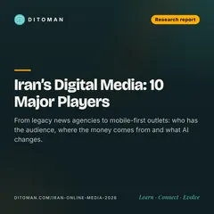
Ten major Iranian online outlets compared: history, money, audience, the national network during the shutdown, AI and readers abroad.
ده رسانه از نُه زاویه: تاریخچه، پول، مخاطب، شبکهی ملی در روزهای قطع اینترنت، هوش مصنوعی و خوانندهی خارج از ایران.
Read the story
Why crypto fell with tech stocks and gold: the Fed, AI shares, ETF outflows and geopolitics, with one-week, four-week and six-month scenarios.
چرا کریپتو همزمان با سهام فناوری و طلا ریخت؛ با سناریوهای مثبت و منفی برای یک هفته، چهار هفته و شش ماه.
Read the story

Daniel Chidiac on overthinking, boundaries and self-sabotage, and why a gap between event and reaction matters in money decisions.
کتاب دنیل چیدیاک دربارهی بیشفکری، مرزبندی و خودتخریبی؛ و اینکه چرا فاصلهی بین اتفاق و واکنش در پول هم مهم است.
Read the story

Peter Zeihan's 2016 book on shale and a world without America as policeman, with a scorecard of his forecasts.
کتاب پیتر زایهان دربارهی انقلاب شیل و جهانی بدون پلیس آمریکا، با کارنامهی پیشبینیهایش تا امروز.
Read the story

Where Iranians live and why: a century of the population map, water, infrastructure and the next 20 years.
مردم ایران کجا زندگی میکنند و چرا: صد سال نقشهی جمعیت، نقش آب، زیرساختها و ۲۰ سال آینده.
Read the story

A Nobel-led panel backs OpenAI's Yang-Mills existence proof; the mass gap and the $1 million prize remain open.
تأیید اثبات هوش مصنوعی برای وجود نظریهی یانگ–میلز؛ شکاف جرمی و جایزهی یک میلیون دلاری هنوز باز است.
Read the story

The Google–Quaise superhot geothermal deal, a century of history, leading countries, the market and Iran's potential.
قرارداد گوگل و Quaise، فناوری زمینگرمایی فوقداغ، تاریخچه، بازار و ظرفیت ایران از مشکینشهر تا دماوند.
Read the story

What the UAE is testing, where it fits in Iran, how it protects soil, and which Iranian companies already do it.
آزمایشهای امارات، کاربرد در مناطق خشک ایران، حفاظت از خاک و شرکتهای ایرانی فعال در کشت هوشمند.
Read the story

Micron, SK hynix, AMD, Arista and Marvell: official figures, ownership, Jensen Huang's exit and scenarios to 2030.
مایکرون، اسکی هاینیکس، AMD، آریستا و مارول: ارقام رسمی به دلار و تومان، مالکیت، کنارهگیری جنسن هوانگ و سناریوها.
Read the story

Industry versus markets: uses, the deficit, the 2026 record and crash, gold and other metals, and the outlook.
صنعت در برابر بازار: کاربردها، کسری بازار، رکورد و سقوط ۲۰۲۶، مقایسه با طلا و چشمانداز آینده.
Read the story

From Tehran 1943 and Yalta to Shenzhen: history, nuclear, political, economic and civilisational stakes, Iran and the scenarios ahead.
از تهران ۱۹۴۳ و یالتا تا شنژن: تاریخ، ابعاد هستهای، سیاسی، اقتصادی و تمدنی، جایگاه ایران و سناریوهای پیش رو.
Read the story

How gold powder is made, the machines and their prices, jewellery economics in Iran and the idea of re-designable gold.
پودر طلا چطور ساخته میشود، دستگاهها و قیمتها، اقتصاد جواهر در ایران و ایدهی طلای قابلبازطراحی.
Read the story

3D printers up 86%, batteries 30%, robots 26%, while retail sales grew just 0.4%: what it means for the world and Iran.
چاپگر سهبعدی ۸۶٪، باتری ۳۰٪، ربات ۲۶٪؛ در حالی که خردهفروشی فقط ۰٫۴٪ رشد کرد.
Read the story

A plant-and-water battery binder: the market, emissions, health, prices, new businesses and the opportunity for Iran.
چسب باتری از گیاه و آب: بازار، گازهای گلخانهای، سلامت، قیمت، کسبوکارهای تازه و فرصت ایران.
Read the story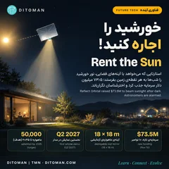

Orbital mirrors, the energy maths, land use, astronomers' alarm and four scenarios for the future.
آینههای فضایی، حساب انرژی، کاربری زمین، نگرانی اخترشناسان و چهار سناریو برای آینده.
Read the story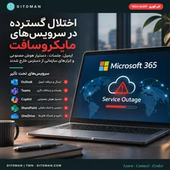

What happened, who was hit, why recovery took so long, scam warnings and how businesses can be less exposed.
چه اتفاقی افتاد، چه کسانی آسیب دیدند، چرا بازیابی طول کشید، هشدار کلاهبرداری و درسها برای کسبوکارها.
Read the story

Auracast in Frankfurt, Munich and Brighton, the global market, AI, the companies, the standards and the opportunity for Iran.
Auracast در فرانکفورت، مونیخ و برایتون، بازار جهانی، هوش مصنوعی، شرکتها، استانداردها و فرصت صنعت صوت ایران.
Read the story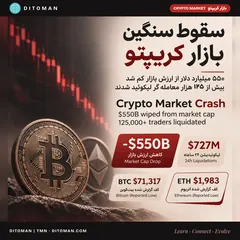

Liquidations, leverage, five causes, a one-year comparison, three scenarios and what it means for Iranian investors.
لیکوئیدیشن و اهرم، پنج دلیل سقوط، مقایسه با یک سال پیش، سه سناریوی آینده و اثر بر سرمایهگذار ایرانی.
Read the story

How AI cuts the cost of starting a small Iranian business: marketing, content, accounting, legal, paperwork, customer service and export, with a 30-day plan.
هوش مصنوعی در بازاریابی، محتوا، حسابداری، امور حقوقی، مدارک، خدمات مشتری و صادرات؛ با حسابوکتاب واقعی و برنامهی ۳۰ روزه.
Read the story

21 global banks commit about $270M to Project Faro: the history, the $295B market, fintech, blockchain and what it means for Iran.
۲۱ بانک بزرگ جهان با حدود ۲۷۰ میلیون دلار وارد بازار استیبلکوین شدند: تاریخچه، بازار ۲۹۵ میلیارد دلاری، فینتک، بلاکچین و معنای آن برای ایران.
Read the story

United banned AI agents from buying tickets: the official reasons, the CEO's "no new middleman", the money in a $1.165 trillion industry, and what it means for Iran.
یونایتد خرید بلیت با هوش مصنوعی را ممنوع کرد: دلایل رسمی، «واسطهی تازه نمیخواهم»، اعداد صنعت ۱٫۱۶۵ تریلیون دلاری و فرصتها برای ایران.
Read the story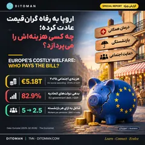

Europe accounts for half the world's social spending and its debt is rising: who pays, why Europe is not one story, and the opportunities it opens for the region.
اروپا نیمی از هزینهی اجتماعی جهان را خرج میکند: چه کسی میپردازد، چرا همهی اروپا یکی نیست و چه فرصتهایی برای منطقه ساخته میشود.
Read the story

Double-digit inflation in 46 of 50 years: why late starters stand further back, why it is not their fault, and what is still in our hands.
تورم دو رقمی در ۴۶ سال از ۵۰ سال: چرا دیر رسیدن گران است، چرا تقصیر تو نیست و چه چیزی هنوز در اختیار ماست.
Read the story

What AI turns into what in five fields, why AI system builders are becoming an industry, and where a business owner can start.
هوش مصنوعی در پنج حوزه چه چیزی را به چه تبدیل میکند و یک تاجر یا کارخانهدار ایرانی از کجا شروع کند.
Read the story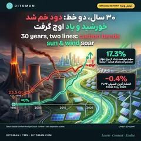

Fossil CO₂ is set to dip 0.4% in 2026 while solar and wind reach 17.3% of world power. Thirty years of data and $3.4 trillion of investment.
انتشار کربن فسیلی در ۲۰۲۶ کم میشود و خورشید و باد به ۱۷٫۳٪ برق جهان رسیدهاند؛ سی سال داده و ۳٫۴ تریلیون دلار سرمایهگذاری.
Read the story

Adults now buy one in five toys. Fifty years of toys, why children still want them, and Iran's chance to become a regional toy hub.
بزرگسالها حالا یکپنجم خریداران اسباببازیاند؛ ۵۰ سال تاریخ اسباببازی و فرصت ایران در بازار منطقه.
Read the story

Shush, Rey and Hamadan are among ten ancient cities that stayed inhabited and kept their names, and they tie Iran to Syria and Lebanon.
شوش، ری و همدان در میان ده شهر کهنیاند که هزاران سال مسکونی ماندهاند و نامشان را نگه داشتهاند.
Read the story

40% of UK kids turn to AI for money advice: what they ask, how accurate the answers are, and where Iran and its neighbours stand.
۴۰٪ بچههای بریتانیایی سؤال پولی را از هوش مصنوعی میپرسند: چه میپرسند، جوابها چقدر درست است و ایران و همسایهها کجا هستند.
Read the story

Economy once meant running a household: how families really live the economy, the Iranian household budget in numbers, and the skills they use to get by.
اقتصاد از اول یعنی ادارهی خانه: دخل و خرج خانوار ایرانی با عدد و مهارتهایی که خانوادهها با آن از پس زندگی برمیآیند.
Read the story

8,112 plant species, a century of change, the economy of trees and plants, Iran beside its neighbours, and 21 companies.
۸٬۱۱۲ گونهی گیاهی، صد سال تغییر، اقتصاد درخت و گیاه، مقایسه با همسایهها و ۲۱ شرکت.
Read the story

65% of 18–29s get news online first, 2.5% often read print papers, and economy is the most-read section.
۶۵٪ جوانها خبر را اول آنلاین میگیرند، ۲٫۵٪ اغلب روزنامهی کاغذی میخوانند و اقتصاد پرخوانندهترین صفحه است.
Read the story

Iran's fleet, fifty years of making and importing, and how Türkiye, Russia, Pakistan, Saudi Arabia and Iraq compare.
ناوگان ایران، ۵۰ سال تولید و واردات، و مقایسه با ترکیه، روسیه، پاکستان، عربستان و عراق.
Read the story

A 40-metre polymerization reactor built in Shiraz for a petrochemical complex in Asaluyeh, and the companies behind it.
راکتور پلیمریزاسیون ۴۰ متری ساخت شیراز برای عسلویه، و شرکتهایی که پشت آناند.
Read the story
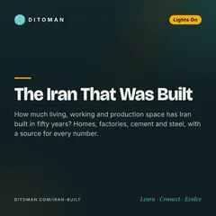
Fifty years of building in numbers: almost six times the homes, 52,000 industrial units, sixth in world cement.
۵۰ سال ساختن با عدد: خانهها نزدیک ۶ برابر، ۵۲ هزار واحد صنعتی، ششمِ جهان در سیمان.
Read the story

France, Taiwan, South Korea and Japan: what is confirmed, what is not, and why third parties are the weak link.
فرانسه، تایوان، کره و ژاپن: چه تأیید شده، چه نه، و چرا شرکتهای همکار حلقهی ضعیفاند.
Read the story

A digital bank with 2.9 million clients was seized, the president was removed, and what deposit guarantees really cover.
بانکی با ۲٫۹ میلیون مشتری بسته شد و رئیسجمهور برکنار شد؛ ضمانت سپرده واقعاً چه چیزی را پوشش میدهد؟
Read the story

Who is racing, why quantum ranks with AI and nuclear power, and what it means for encryption and Bitcoin.
چه کشورهایی در این مسابقهاند و چه اثری بر رمزنگاری و بیتکوین دارد.
Read the story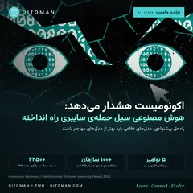

The Economist says AI has turbocharged hacks. The evidence, the warnings and what defenders must do.
شواهد، هشدارها و کاری که مدافعان باید بکنند.
Read the story
Bitcoin, Ether and USDT for retail through licensed intermediaries only, with a 300,000-ruble cap.
سه رمزارز برای مردم عادی، فقط از راه واسطههای مجاز و با سقف سالانه.
Read the story
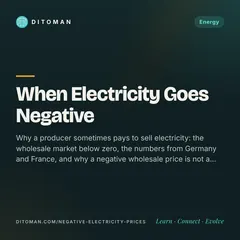
Why producers sometimes pay to sell power, and why your bill does not go negative.
چرا تولیدکننده برای فروش برق پول میدهد و چرا قبض تو منفی نمیشود.
Read the story
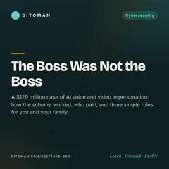
A $129M fraud case alleged to use cloned voices and faces, and three rules to protect yourself.
پروندهی ۱۲۹ میلیون دلاری با جعل صدا و تصویر، و سه قانون ساده برای محافظت.
Read the story

An Iranian surgical robot: what is documented and what is still the maker's claim.
از دانشگاه تا اتاق عمل؛ آنچه مستند است و آنچه هنوز ادعای سازنده است.
Read the story

An Iranian AI screening system meets a century-old export trade.
سامانهی هوشمند غربالگری آفلاتوکسین و جایگاه پستهی ایران در جهان.
Read the story

Going out got 20% pricier than inflation, yet free meet-ups fell too.
گرانی تنها مقصر نیست؛ حتی دورهمی رایگان هم کم شد.
Read the story

One deposit in Yazd holds about as much zinc as all of Peru's reserves.
ذخیرهای در دل کویر یزد، هماندازهی ذخایر روی کشور پرو.
Read the story

An Iranian-made EO catalyst now runs Morvarid Petrochemical's glycol unit at full capacity.
کاتالیست ایرانی EO، واحد گلایکول پتروشیمی مروارید را با ظرفیت کامل میچرخاند.
Read the story

How CinnaGen won EU marketing authorisation for Zandoriah.
داستان مجوز اروپایی داروی زاندوریا، ساخت سیناژن.
Read the story

What it can do, who gets to use it, and what Iranians can learn from it.
چه میکند، چه کسانی از آن استفاده میکنند و چه درسی برای ما دارد.
Read the story۳۰ درس کوتاه و دوزبانه، قدمبهقدم: از پول و تورم تا بانک، بلاکچین و هوش مصنوعی.30 short bilingual lessons, step by step: from money and inflation to banks, blockchain and AI.
One permanent editorial rule across all three: real knowledge and real achievement, no political commentary from any side.
How blockchains work, how to check a token before you touch it, and how to protect yourself from scams.
Honest analysis of the shifts coming, read from where our audience actually stands.
Documenting what Iranian people and businesses have built, with a source for every figure.
A structured map of what is made, mined, moved and seen in Iran: six branches, their official sub-branches, the leading companies, and a source for every number.


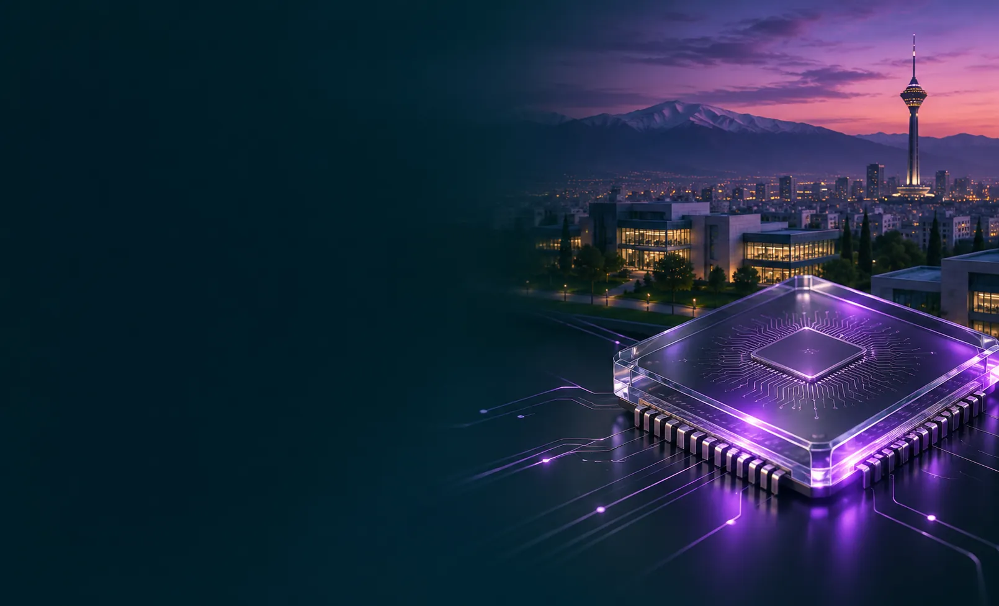

History, products, leadership and figures, sector by sector, with a source for each number.
Android app store for Persian speakers; 500,000+ apps
فروشگاه برنامهی اندروید برای فارسیزبانان؛ بیش از ۵۰۰ هزار برنامه
View the recordBiosimilar drugs, laboratory reagents and recombinant proteins
داروهای زیستیمشابه، معرفهای آزمایشگاهی و پروتئینهای نوترکیب
View the recordIranian e-commerce; since 2006
بزرگترین فروشگاه اینترنتی ایران؛ از ۲۰۰۶
View the recordASIC, SoC and FPGA design; the 32-bit Aristo microprocessor
طراحی تراشهی ASIC، SoC و FPGA؛ ریزپردازندهی ۳۲ بیتی آریستو
View the recordSina Robotic Surgical System
سامانهی جراحی رباتیک سینا
View the recordRide hailing with fixed prices; launched February 2014
درخواست خودرو؛ قیمت از پیش مشخص؛ آغاز فوریهی ۲۰۱۴
View the recordKraft and semi-kraft paper, corrugated board and cartons, cardboard; Yazd Industrial Town
کاغذ کرافت و سمیکرافت، ورق و کارتن کنگرهای، مقوا؛ شهرک صنعتی یزد
View the record
One of Iran's largest ethylene and polyethylene makers, in Asaluyeh, exporting over 70% of output
یکی از بزرگترین تولیدکنندگان اتیلن و پلیاتیلن ایران در عسلویه؛ بیش از ۷۰٪ محصول برای صادرات
View the recordCoated MDF sheets and profiles, PVC wall panels, artificial stone, ceiling tiles; Anzali Free Zone, Gilan
ورق و پروفیل امدیاف روکشدار، دیوارپوش پیویسی، سنگ مصنوعی و تایل سقفی؛ منطقه آزاد انزلی، گیلان
View the recordHerbal medicines, cosmetics, food products and essential oils; Kashan, Isfahan (plant near Qamsar)
داروی گیاهی، آرایشی و غذایی بر پایهی گیاهان دارویی؛ اسانس؛ کاشان، اصفهان (کارخانه نزدیک قمصر)
View the recordPulp and paper; Gilan
خمیر کاغذ و کاغذ؛ گیلان
View the recordRosewater, herbal distillates, natural syrups and dried herbs; Amirkabir 1 Industrial Town, Kashan
گلاب، عرقیات گیاهی، شربت طبیعی و گیاهان دارویی خشک؛ شهرک صنعتی امیرکبیر ۱، کاشان
View the record«بیسوادان قرن بیستویکم کسانی نیستند که نمیتوانند بخوانند؛ کسانیاند که نمیتوانند یاد بگیرند، از یاد ببرند و دوباره یاد بگیرند.»
"The illiterate of the 21st century will not be those who cannot read and write, but those who cannot learn, unlearn, and relearn."
Ditoman takes its name from the Toman, the everyday name for Iranian money: a "digital Toman". TMN was deployed on BNB Smart Chain in February 2022 with one question behind it: can knowledge itself carry real value?
For nearly four years we stayed deliberately quiet. No marketing, no token sale, no launch. That history is on-chain for anyone to check, and it is the clearest sign this was never built for a quick pump.
Short lessons by topic, about five minutes each, in both languages, each ending with a quiz.
Lessons, short news explainers and updates, in Farsi and English. No signals, no hype.
TMN is the BEP-20 token behind Ditoman, planned for recognising real learning and contribution. It is not an investment product and we do not ask anyone to buy it.
Several unrelated tokens use the ticker TMN. This is the only official contract:
0x86a56e59f22Eaf3867EEeB41fB9BfA81BacE790d
نقطهضعفها را هم مینویسیم، چون درس بررسی توکن یاد میدهد دنبالشان بگردی.
Phases, not dates. We report progress honestly, including what did not work.
Contract verified, ownership renounced, about 20% of supply out of circulation, bilingual lessons published, whitepaper final.
A Telegram community with real rules, seeded lessons and clear onboarding, before any invitation.
29 Oct 2026: all TMN/BNB liquidity in the project's main wallet locked until 29 Oct 2027. Verify the lock · What it means
۷ آبان ۱۴۰۵: همهی لیکوئیدیتی TMN/BNB کیفپول اصلی پروژه تا ۷ آبان ۱۴۰۶ قفل شد.
Joining Persian-language crypto and diaspora communities, and the first public supply removal with proof.
Read ten lessons, pass a ten-question test and receive 500,000 TMN, for the first 1,000 people. Start here.
ده درس را بخوان، در آزمون دهسؤالی قبول شو و ۵۰۰٬۰۰۰ TMN بگیر؛ برای ۱٬۰۰۰ نفر اول. از اینجا شروع کن.
A bilingual education project built around three pillars: practical crypto and financial literacy, honest analysis of AI, energy and the future of work, and coverage of real achievements by Iranian people and businesses.
از کسی نمیخواهیم بخرد. عرضهی TMN متمرکز است. صفحهی TMN را بخوان و با همان معیارهایی بسنجش که هر توکن دیگری را میسنجی.
No. Ditoman is an education project. Nothing here is investment advice, and the lessons are built to help you decide for yourself.
It is a permanent editorial rule. We document real knowledge and real achievement, and stay out of political commentary from any side.
Yes. The learn-and-earn pilot is open: read ten lessons, pass a ten-question test and receive 500,000 TMN, for the first 1,000 people. Start here.
بله. طرح «یاد بگیر، توکن بگیر» باز است: ده درس را بخوان، در آزمون دهسؤالی قبول شو و ۵۰۰٬۰۰۰ TMN بگیر؛ برای ۱٬۰۰۰ نفر اول. از اینجا شروع کن.
One document sets the direction. Read it before you trust anything we say.
گزارشها، آموزشها و روایتهای امیدبخش، هر روز در کانالهای دیتومان.